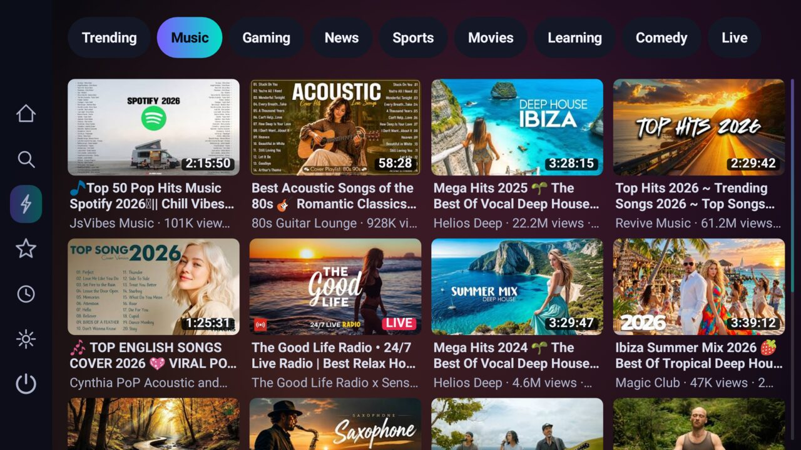
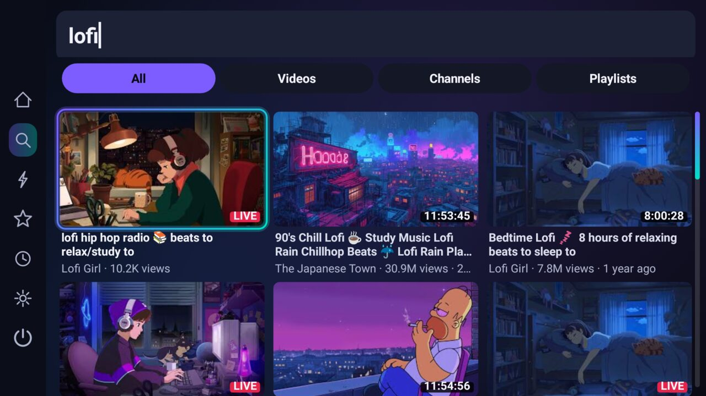

PipeTv
A fast, private, keyboard-first YouTube client for Android TV.
Download APK View on GitHubScreenshots





Why PipeTv?
- Instant & smooth – custom-drawn UI, cached feeds, Android 5.0+ (Android TV, Fire TV, Google TV).
- Private – no Google services, no account, no API key, no ads. Built on NewPipeExtractor.
- Smart search – on-screen keyboard in 14 layouts, live suggestions, filters and voice search.
- SponsorBlock – silently skips sponsor segments.
- Keep browsing while watching – mini player and overlay menus.
- 10 languages incl. full Arabic RTL. Auto-updates from GitHub Releases.
Install
- Download the latest
PipeTv-*.apkfrom Releases. - Sideload with
adb install, Downloader or a USB drive. - PipeTv then updates itself (Settings → Updates). Obtainium works too.
FAQ
Is PipeTv a NewPipe alternative for TV? Yes – it uses NewPipe's extractor with a TV-first, remote-friendly interface.
Is it free? Yes, open source under GPL-3.0.